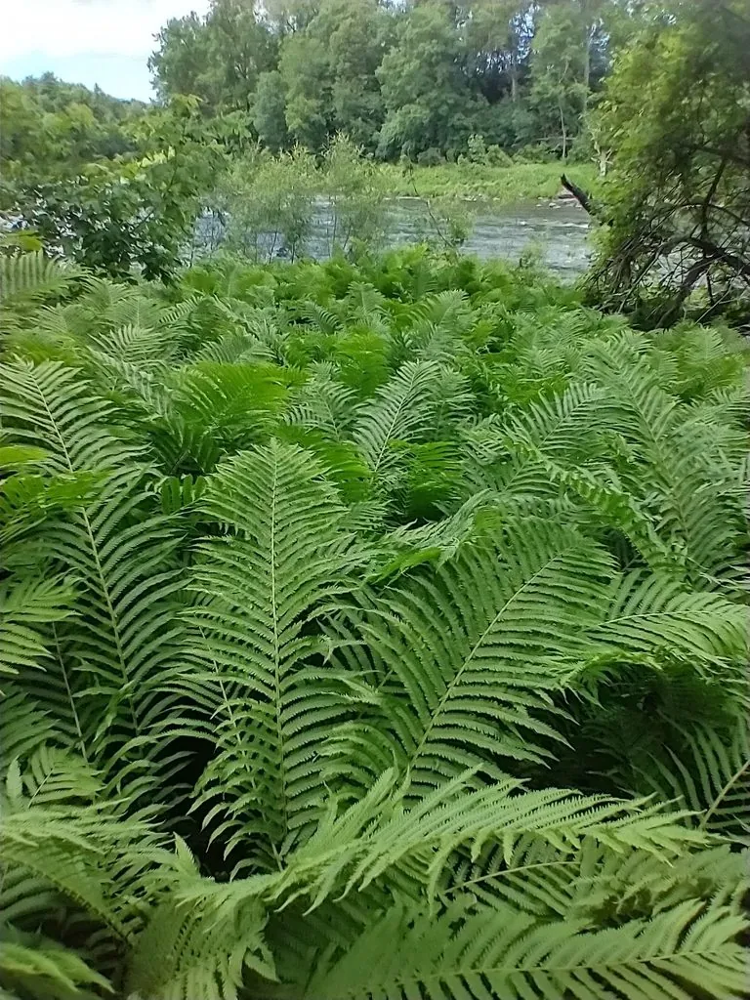

蕨类与裸子植物 · 植物界
荚果蕨 Matteuccia struthiopteris

荚果蕨的羽状复叶丛生如漏斗，幼叶拳卷可作野菜“黄瓜香”，是北方山地林下常见的观赏与食用蕨类。
- 分类
- 门蕨类植物门纲水龙骨纲目水龙骨目科球子蕨科属荚果蕨属
- 栖息环境
- 山地林下、溪边与林缘，喜凉爽湿润、半阴，耐寒
- 地理分布
- 中国东北、华北、西北及西南山地，北半球温带广泛分布
- 保护级别
- 暂无评估；野生种群常见
物种志
荚果蕨是球子蕨科多年生蕨类，株高 0.5–1 m。根状茎粗壮直立，叶二型：营养叶为二回羽状复叶，羽片细密，呈漏斗状丛生，姿态优美；孢子叶较短，羽片卷曲成荚果状，成熟时褐色，包裹孢子囊群。营养叶初生时拳卷，密被鳞片。
荚果蕨喜凉爽湿润和半阴环境，多生于山地林下、溪边与林缘，耐寒性强，在北方分布较多。它以孢子繁殖，也可分株，适合林下和阴湿处栽培观赏。春季拳卷的嫩叶可焯水后炒食、腌渍，因有清香的黄瓜味，民间称“黄瓜香”，是东北等地常见的山野菜；根状茎在民间也作药用。荚果蕨叶形优美，是耐寒蕨类中观赏价值较高的种类，适合北方林下栽培。
形态与习性
- 株高0.5–1 m
- 叶二型，营养叶漏斗状丛生
- 孢子叶羽片卷曲成荚果状
- 食用嫩叶称“黄瓜香”，可作山野菜
- 耐寒性强，适合北方栽培
趣味知识
- 荚果蕨的孢子叶卷曲成荚果状，所以叫“荚果蕨”。
- 它的嫩叶有黄瓜清香，东北等地把它当山野菜“黄瓜香”采食。
- 荚果蕨耐寒，是北方林下少见的优良观赏蕨类。